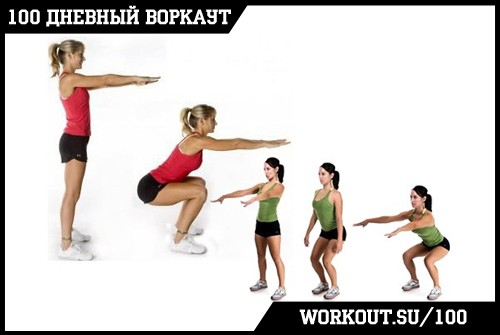
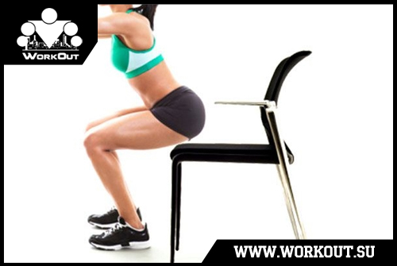
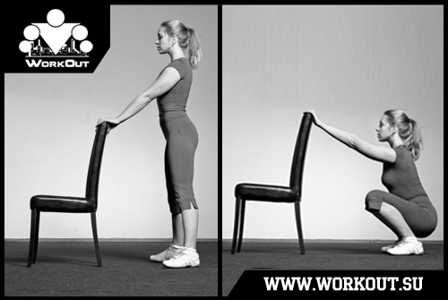

100 Дневный воркаут
<==== Вернуться к оглавлению
День 4. Приседания (правильные)
Ни для кого не секрет, что воркаутеры любят
подтягиваться
, отжиматься и выполнять разные
элементы на турниках и брусьях
. Но практически никто из воркаутеров не любит приседать. А между тем это базовое, комплексное упражнение для нижней части тела, лучше которого сложно что-нибудь придумать! И сегодня мы будем говорить именно о приседаниях ;)
Приседания

Приседания — одно из самых эффективных силовых упражнений, поскольку движение является многосуставным, вовлекает в работу огромное количество крупных и мелких мышц нижней части тела. Классические приседания дают нагрузку прежде всего на квадрицепсы, большие ягодичные мышцы, приводящие мышцы бедра, а также камбаловидные мышцы. Стабилизаторами являются бицепсы бедра, а также икроножные мышцы. Также нагрузка приходится на мышцы брюшного пресса, разгибатели спины и некоторые другие мелкие мышцы ног и туловища.
*** ВАЖНО ***
Приседания, если не соблюдать правильную технику, могут быть довольно травмоопасными для ваших коленных суставов и поясницы! Поэтому внимательно прочитайте информацию в данном инфо-посте!
Основные моменты
* Чем больше амплитуда движения, тем больше мышц задействуются в процессе;
* Напрягите мышцы живота, чтобы они сформировали корсет вокруг талии
* Для максимального результата вам необходимо постоянно держать мышцы в напряжении и приседать медленно вниз и быстро вверх;
* Вдох на движении вниз, выдох на движении вверх
Техника безопасности
Поскольку в процессе приседаний активно задействуются коленные и тазобедренные суставы (а так же голеностоп), то при выполнении этого упражнения очень важно следовать правильной технике:
* Движение должно проводиться по естественной траектории
* Не выгибайте и не округляйте спину
* Не отрывайте пятки от пола
* При движении вниз колени не должны заходить сильно за носки (немного можно)
* При движении вниз колени не должны "вваливаться" внутрь
* Мышцы должны всё время находиться в напряжении
* Никаких рывков и резких движений быть не должно
* При возникновении неприятных ощущений прекратите выполнение упражнения и попробуйте другой вариант
Само упражнение можно разделить на 6 составляющих:
1. Поставьте ноги чуть шире, чем ширина плеч.
2. Носки ступней должны быть направлены прямо вперед или развернуты немного в стороны (как вам будет комфортнее)
3. Руки на поясе или вытянуты в стороны для баланса.
4. Выполняя присед, вдохните.
5. Опирайтесь на пятки и присядьте до параллели бедра с полом (или ниже).
6. Поднимаясь вверх из приседа, выдохните.
Облегченные приседания
Если вам по началу тяжело сохранять равновесие при выполнении приседаний и вы заваливаетесь назад (а большинству девушек по-началу будет тяжело), то попробуйте делать следующие два подводящих упражнения:
1) Поставьте сзади себя стул и выполняйте приседания вниз до касания стул, после чего возвращайтесь в исходное положение стоя. Таким образом вы будете тренировать верхнюю половину движения.

2) Тренируйте вставания из глубокого приседа.
3) Приседайте, держась за опору.

Полезные советы
Вес на пятках.
Всё правильно, в процессе выполнения упражнения ваш вес должен располагаться полностью на ваших пятках. И это удобный способ проверить, правильно ли вы всё делаете. Если правильно, то вы сможете в любой момент приподнять носки над полом. Здесь же следует рассказать про положение коленей и про рекомендацию о том, что они не должны выходить за носки.
Во многих источниках указывается, что колени не должны выходить за носки, хотя поголовно на всех фотографиях человека в приседе видно, что колени таки выходят за носки на пару сантиметров. Ошибка описания? Отнюдь. Скорее неточность. Суть в том, что у каждого человека свое соотношение между длиной конечностей и их отдельных частей. Поэтому одни могут не выносить колени за носки и присесть технически правильно, другие при этом заваливаются назад. Поэтому это условие немного не верно написано. Нужно НЕ ОТРЫВАТЬ пятки от пола, более того так распределять массу, чтобы на пятки приходилось 2/3 веса, на носки - 1/3. Центр тяжести должен проходить через голеностоп. Естественно, что компенсаторно Вам придется выносить колени вперед, а таз отводить назад-вниз. Колени при этом уйдут вперед настолько, насколько это нужно, у кого-то выйдут за носки, у кого-то нет. Если же перемещать центр тяжести вперед (убирая его с пяток и в конечном итоге отрывая их от пола), то корпус будет все более выпрямляться, а колени все дальше выходить за носки. При этом связочный аппарат коленей начинает испытывать все большие перегрузки, что чревато травмами. Если стараться любыми способами не выносить колени за носки, то кому-то для этого придется очень сильно отводить таз назад и вместо приседаний получится своеобразная румынская тяга (т.е. будет нагружаться спина и задняя поверхность бедра, а не целевые квадрицепсы и ягодичные мышцы).
Положение стоп.
Стандартное положение при приседаниях - стопы стоят на ширине чуть шире плеч и носки немного развернуты вовне. Однако в зависимости от того, как широко друг от другая стоят стопы, меняются и мышцы под нагрузкой. Общее правило - чем ближе стопы друг к другу, тем сильнее нагружаются внешние мышцы (те, которые дальше от центра тела), чем дальше друг от друга - тем внутренние (в смысле те, которые ближе к центру тела). Второе общее правило - чем ближе стопы друг к другу, тем более параллельны они должны быть, чем дальше друг от друга - тем сильнее разворачивайте носки вне. Это позволит обеспечить правильное движение коленей при приседаниях. В общем, здесь есть с чем поэксперименитровать и мы обязательно рассмотрим этот вопрос ещё раз в ПРОДВИНУТОМ блоке ;)
Положение рук.
Если вы только учитесь делать приседания, то я бы рекомендовал вам выставлять руки перед собой по мере движения вниз. Таким образом вы будете создавать некоторый контрбаланс (если в руки взять что-нибудь увесистое, то контрбаланс будет сильнее), который позволит вам сохранять равновесие при приседаниях. Как вариант вы можете выполнять приседания рядом с чем-нибудь за что можно держаться руками (сбоку от себя например, спинка стула или стол), помогая себе таким образом сохранять равновесие.
Глубина приседаний.
Довольно часто можно услышать тезис о том, что приседать нужно только до "параллели", то есть до того момента, пока бедро не опустится до горизонтального положение (пралаллельно полу). Многие даже пугают тем, что если приседать ниже, то можно травмировать колени. В этом вопросе, как и практически в любом, рекомендовал бы вам прислушиваться к своему организму. Если вам не комфортно приседать ниже "параллели", то не нужно. Ваша главная задача в рамках 100 дневного воркаута - пробовать ту информацию, которую вы получаете, анализировать ее и учиться понимать, как работает ваше тело. Только тогда вы сможете эффективно тренироваться!
Лично я считаю, что все эти слухи относительно опасности глубоких приседаний сильно преувеличены. Судите сами, у коленного сустава есть своя природная амплитуда, движение в рамках которой было спроектировано самой природой! Это движение, таким образом изначально является естественным и безопасным для нас. Посмотрите на маленьких детей, они постоянно используют глубокие приседания в своей жизни! Кроме того,
ogrudko
правильно замечает, что чем глубже вы приседаете (в естественных пределах), тем лучше прорабатываются мышцы за счет большей амплитуды их растяжения и сокращения. Приседать нужно до глубины, которая позволяет удерживать правильную технику (стопа полностью на полу, упор на пятки, поясница с естественным прогибом, не округленная). Как только техника ломается, то ниже приседать не нужно, но следует постепенно увеличивать амплитуду, улучшая гибкость и подвижность суставов.
Теперь пару слов о том, откуда вообще взялись эти приседания до "параллели". Есть одна теория на этот счет, которая мне импонирует. Дело в том, что существует такой вид силового спорта, как пауэрлифтинг. В нем спортсмены соревнуются на силу в трех упражнениях: приседаниях, жиме лежа и становой тяге. В свою очередь для того, чтобы иметь возможность оценивать спортсменов, необходимо было разработать правила оценки. В этих правилах, в свою очередь, было решено указать, что глубина приседа должна быть до параллели или ниже. Однако, если правила разрешают присесть только до параллели, и такие приседания позволяют поднимать больший вес, то зачем приседать ниже? Так что на самом деле приседания до параллели - это просто особенность пауэрлифтинга, как вида спорта.
Кстати, что касается термина "присед до параллели", то здесь имеется в виду, что верхняя часть вашего бедра должна быть параллельна полу, а попа, естественно, ниже. Потому что некоторые обладатели "красивых бедер" существенно урезают амплитуду упражнения, смотря в зеркале на нижнюю часть, и по факту приседающие всего градусов на 60, значительно снижая эффективность данного упражнения.
======> День 5. Отжимания от пола (правильные)